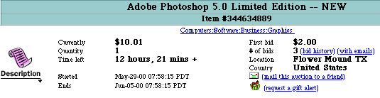

Legal action is when there is a judicial proceeding brought by one party against another in order to...
Go back home Go back home Go back home Go back home Go back home Go back home Go back home Go back home
Inclusivity is when software is is accessible and does not exclude any section of society.
Today data is valuable and results in countless issues with companies and the handling data.
Software piracy is the practice of illegally downloading and distributing copyrighted content digitally without the permission of the owner, such as music and movies.
Scroll down for more information
Intellectual Property - the personal property of a person from the result of their creations, such as music or software. As a result, the owner of the intellectual property can protect it by putting copyright.
Copyright - the legal rights of a person’s intellectual property law that is used to safeguard the intellectual property rights of the authors. This means for a person to use someone’s intellectual property, they would need to ask permission and the owner might allow the person to use their intellectual property provided that they give economic incentives for their intellectual property.
Piracy - in the context of software, is the practice of illegally downloading and distributing copyrighted content digitally without permission, such as music or software
Ever since the creation of software applications, software piracy and the breach of copyright has been a very prevalent issue. In fact, in the late 1980s personal computers were more common in homes, there existed BBS (Bulletin Board System) which is an electronic message center similar to modern day forums. As a result, there were BBS groups which would pirate the newest software and upload them to different BBS groups and countries. Moreover, BBS spawned bidding groups where pirates were able to gain monetary value by selling pirated software as seen in the image below.
As a result, laws are put into place in order to protect the rightful owners of the intellectual property, as not putting it into place results in a loss of revenue to the owner, while making the perpetrator profit off someone else's work. Thus, there would be less advancement and innovation in software, due to the fact developers are less funded in fear of piracy.
In Legal Actions from Software, you learnt about how legal action can be put in place due to piracy. However, it is often difficult and takes too much resources in order to enforce fines and lawsuits against a small group of people that use pirated software. As a result, developers like Nintendo have put in place piracy protection measures in which inhibit the use of using pirated software.
Ever since the development of the Nintendo Entertainment System in 1983, the company has put in place primitive antipiracy measures in the form of cartridge based lockout chips which prevented bootleg and imported games from running in the console. As a result, playing the pirated game could either freeze the system, put anti piracy messages, or even make the game playable but impossible to progress through the game.
Credit: CWillyHDSince the launch of the Nintendo Switch in 2017, Nintendo have created more powerful methods of antipiracy in the form of cryptography. Nintendo does this by a using a unique encrypted client certificate stored in the "TrustZone" core of every Switch unit. If a person is ever caught with using pirated content in their system, the console will not be in the "Trust Zone", thus being permanently banned from connecting to Nintendo Servers.
For Switch games, physical cartridges will all have an RSA-2048-signed string that's written at the factory. This means if a person were to create a copy of the cartridge, the sharing of certificates will be detected, thus if a person were to connect to Nintendo servers, the client would detect a sharing of certificates, thus banning all the copies detected. Similarly, downloadable Switch games are only able to be downloaded on the Nintendo eShop which provides a unique Device ID and the Nintendo Account ID used to purchase a game.
From this case study, it is clear the implications of how copyrights are protected through antipiracy protections in the form of hardware and software protective measures that punish average consumers, without the extra expenditure of resources in sueing individuals one by one.